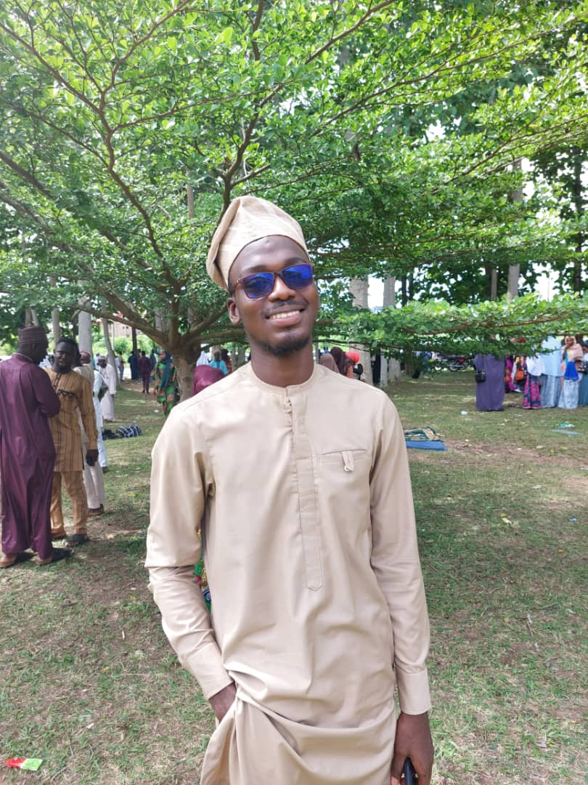

About Me
- Name: Umar Sulaiman
- AltSchool ID: ALT/SOE/023/3661
-
Biography: Umar Sulaiman is a 23-year-old student hailing from the state of Osun in Nigeria.
He is currently pursuing his education at a university, where he is passionately working towards his
academic and career goals. Umar has always shown a strong dedication to his studies, displaying a remarkable
commitment to his pursuit of knowledge. He believes that education is the key to personal and societal development,
and he's determined to make a positive impact through his studies. In his spare time, Umar enjoys various
hobbies and activities that enrich his life outside of academics. He might be found exploring literature, engaging
in sports, or participating in community events. Umar has a strong sense of community and often volunteers his time
and skills to support local initiatives. Umar Sulaiman's journey is just beginning, and with his enthusiasm
for learning and his dedication to his goals, he's poised to achieve great things in the future.

-
Reason for joining AltSchool: I've chosen AltSchool because of its comprehensive curriculum
and experienced instructors. My career objective is to thrive as
a software developer, devising innovative solutions for real-world
issues. I believe this program will not only enhance my professional
prospects but also significantly contribute to my personal development.
I'm dedicated to excelling in the software engineering program, investing
my time and effort in mastering essential skills. I eagerly anticipate the
challenges and growth this program promises, and I'm enthusiastic about making
a meaningful impact in the field.